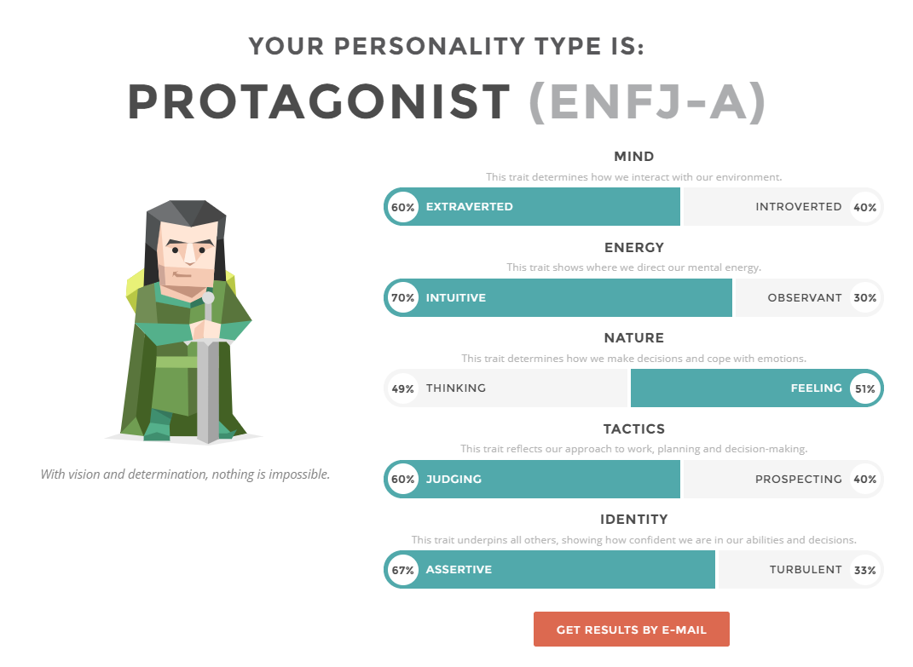
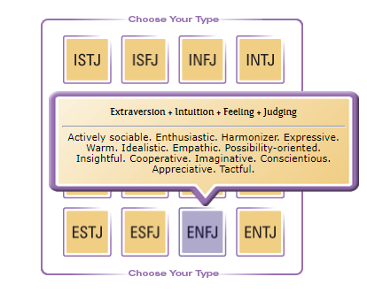
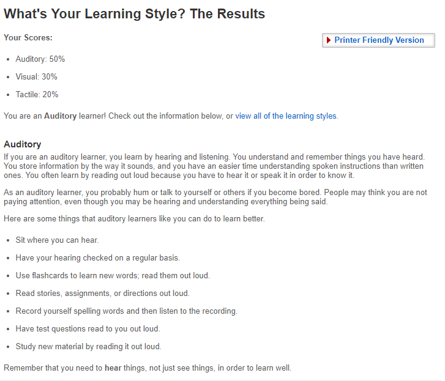
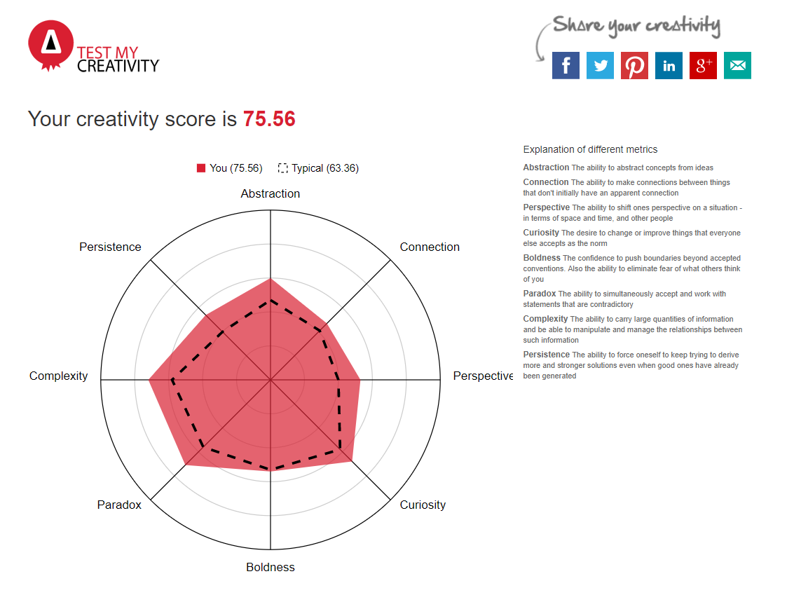

The results of an online Myers-Briggs test: ENFJ-A
https://www.myersbriggs.org/my-mbti-personality-type/mbti-basics/  The results of an online learning style test: Auditory
http://www.educationplanner.org/students/self-assessments/learning-styles-quiz.shtml The results of one further online test of your choosing: Creativity Test
http://www.testmycreativity.com/ Q: What do the results of these tests mean for you?
A: The Myers-Briggs test: I scored the Protagonist Role - ENFJ-A (Extraverted, Intuitive, Feeling, Judging, Assertive). To me this means I am a well defined as a character, Generally speaking, the protagonist is the character whom the reader or audience accompanies for the greater part of the narrative. Often the protagonist is the character who exhibits the most profound change or transformation by the end of the story. https://www.beemgee.com/blog/protagonist/
Q: How do you think these results may influence your behaviour in a team?
A: I think the results have a possive influce on my behaviour when working in a team, It shows my assertiveness and judgemental skills as well as empathy for my teammates.
Q: How should you take this into account when forming a team?
A: When taking into account, I would be a very good and understanding leader, seeing both sides of the spectrum and looking at logic before creativity.